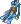

Wolve's PvM Minstrel Guide
| This guide has not been updated in a while. | ||
|---|---|---|
| Information on this page may be obsolete and outdated. Please refer to the author for information on future updates. |
||
Greetings one and all! First of all, welcome to NovaRo. I am known as Wolv and I mostly main support classes. Here is an introduction and guide to my favorite and most played class in the game, the Minstrel. Minstrels, or Maestros depending on what server you are in, are some of the most essential classes to have in a party and can have the same importance as an Archbishop in terms of allowing your party to conquer instances. The Minstrel's most iconic skill remains to be A Poem of Bragi  which can be accessed early on the second stage Bard class. It is so iconic in fact, that Minstrels are often referred to as Bragi and alternative accounts have been made for " Bragi " slaves.
which can be accessed early on the second stage Bard class. It is so iconic in fact, that Minstrels are often referred to as Bragi and alternative accounts have been made for " Bragi " slaves.
For some people having the Minstrel play  A Poem of Bragi is enough, but I will share with you the knowledge I have gained from several experiences throughout the game. There is more to a Minstrel than simply being a bragista and when I am done with this guide, I hope that you will share my love of the class.
A Poem of Bragi is enough, but I will share with you the knowledge I have gained from several experiences throughout the game. There is more to a Minstrel than simply being a bragista and when I am done with this guide, I hope that you will share my love of the class.
Fair warning, this guide is meant and tailored for NovaRO, I cannot promise the same results for other servers.
| Minstrel | |||||||||||||||||||
|---|---|---|---|---|---|---|---|---|---|---|---|---|---|---|---|---|---|---|---|
 | |||||||||||||||||||
| Job Base: | Male Archer | ||||||||||||||||||
| Written By: | Wolvero | ||||||||||||||||||
| |||||||||||||||||||
Overview

The Minstrel class is only accessible by male Archers. This is because the Performer Class set of Bard and Dancer are gender locked. Males can only be Bards, and females can only be Dancers. With that said their play styles have some similarities but have access to different skills. As most of my experience is only applicable to the male line, I shall only cover the Bard class.
Minstrels are also one of the few classes that rely on other party members of the same Class ( i.e. Wanderer or Minstrel ). A lone Performer Class in a party will lose access to very powerful skills that are under the Ensemble or Chorus skill trees. For example, performers have skills that can add at least a 5% Ranged damage increase or provide at least 15% elemental reduction for defensive capabilities. Having multiple performers in the same party can definitely boost the overall power.
The role of Minstrels mainly involve providing song buffs that increase the party's overall damage output and help support the Archbishop in keeping the party alive and running. With the right build Minstrels can dish out reliable sustained damage that can help hasten the death of MVPs and large mobs with their offensive skills dealing about 100k to 150k on average in mid to late game.
With that said, Minstrels can also act as a secondary source of DPS(Damage Per Second). While the damage may not be as great as damage-oriented classes ( i.e. Rangers, Rebellions, Warlocks, Guillotine Cross, etc etc. ), Minstrels have access to skills that can rival the damage output of damage-oriented classes and kill end-game mobs.
Personally I play a Minstrel that also provides secondary damage rather than simply being a Full Support Singer Minstrel. Also I tend to have stronger levels of damage than some not so excellently geared Rangers. Not to brag ( Get it? ), but Minstrels can have greater Damage with
 Severe Rainstorm than
Severe Rainstorm than  Arrow StormRangers if only stats are considered into the equation. It's just easier for Rangers to get extremely high damage because they have access to better gear PvM wise. Also Rangers don't build for support while Minstrels are often criticized if they don't just stick to support skills.
Arrow StormRangers if only stats are considered into the equation. It's just easier for Rangers to get extremely high damage because they have access to better gear PvM wise. Also Rangers don't build for support while Minstrels are often criticized if they don't just stick to support skills.
Cast Time vs. Cast Delay
Before I go into any major details for Minstrels, I'll need to explain what the difference is between Cast Time and Cast Delay.
Cast Time
Cast Time involves the amount of time your character spends between the command you provide for the skill to be used, to the actual time the skill will be performed. Cast Time for the Renewal system of Ragnarok Online involves 2 parts: Fixed Cast Time and Variable Cast Time.
Variable Cast Time is the portion of your Cast Time that can be reduced by the Intelligence[INT] and Dexterity[DEX] stats. It is possible to achieve 100% Variable Cast Time reduction purely on stats alone. This is the equation:
100% Variable Cast Time Reduction = 2X[DEX] + [INT] = 530
While this does indeed look like a daunting number, it is quite possible with the right number of stat boosting foods such as:
- +10 INT
 Dragon Breath Cocktail
Dragon Breath Cocktail - +20 INT
 Warg Blood Cocktail
Warg Blood Cocktail - +10 DEX
 Hwergelmir’s Tonic
Hwergelmir’s Tonic - +20 DEX
Siroma Icetea
There are other ways to increase your stats, however I will not be covering them in this guide.
Cast Delay
Unlike Cast Time, Cast Delay involves the amount of time a character can cast another skill. Each skill provides a certain period of Cast Delay that will prevent the character from casting any other skills. Cast Delay should not be mistaken as Cooldown as Cooldown refers to the set time the same skill can be used repeatedly without affecting other skills. For example, Minstrels have a skill called Metallic Sound which has both a Cooldown and a Cast Delay. Once it has been performed, a certain period of time will prevent the Minstrel from using any other skills that they may have. That is Cast Delay. After Cast Delay is over the player may then cast any other skills that he or she may want. On the other hand Metallic Sound also has a Cooldown which prevents the Minstrel from casting Metallic Sound again until the Cooldown finishes.
Unlike cast time, you cannot decrease Cast Delay using your stats.
Extra Note
There's an additional source of delay that may add to Cast Delay which is called Animation Delay. Animation Delay is the actual time the character performs the skill, hence the name animation. This can be decreased based on your attack speed and Agility[AGI] stat however I will not go into detail on this guide.
Stat Influence
In this section I will explain the importance of each stat to a Minstrel although I will not cover the general effects of each statistic in great detail. In the past stats affected Minstrel songs but with a big overhaul job change, stats no long influence the song skills of bard.
| Stat | Notes |
|---|---|
| Strength [STR] | STR is mainly used to increase Physical Attack[ATK] as well as carrying capacity. This is the least important statistic to have for a Minstrel whether you are going for a more offensive or supportive build. To be more specific STR is the stat that primarily affects ATK when using melee weapons. ATK when using bows and instruments are also increased but not to the same extent as it does with melee weapons such as Daggers. |
| Agility [AGI] | AGI is the primary stat used for increasing Attack Speed[ASPD] as well as Flee. AGI also helps decrease Animation Delay. As a Minstrel keep this stat in mind but do not worry about prioritizing it. While FLEE is indeed important for Minstrels, the main draw of this stat is its ability to increase the Attack Damage of Severe Rainstorm. But I will cover that in more detail at the skills section.
|
| Vitality [VIT] | VIT is important for providing status immunities like Stun and is the primary stat that increases your Health Pool[HP] as well as your Physical Defense[DEF]. This stat is VERY important for Minstrels. The class is no good to the party dead and Minstrels are often the last characters standing in a party. Make sure to place a lot of stat points in this. |
| Intelligence [INT] | INT is the main source of Magical Attack Damage[MATK] and Magical Defense[MDEF]. INT also increases Maximum SP pool which you need to cast skills. INT is THE most important stat for Minstrels. Not only does it increase a Minstrel's ability to survive Magic Attacks, it also ensures that Minstrels can USE their skills. Minstrel skills DRINK SP faster than most classes and the base SP pool that Minstrels get is small, often plateauing between 2000 to 3000 without the use of Cards and equipments that increase MaxSP. Trust me, though this sounds large it is not enough for the amount times the skills must be used. |
| Dexterity [DEX] | DEX is the primary source for Ranged Physical Attack Damage[Atk] as well as Accuracy[HIT]. DEX also reduces Variable Cast Time. DEX is important as Minstrels are Archer classes and Severe Rainstorm is a Physical Ranged source of damage. Keep this into consideration in any builds.
|
| Luck [LUK] | LUK is there to provide a lot of benefits such as status immunities and also provides increased Atk and MAtk, increased HIT and FLEE. This is a bit more complicated but Minstrels do benefit from the increased FLEE and for those who make Crit builds for fun. Keep this in mind but don't focus on it. |
Skills
Archer Job Skills
The Archer Class Skills are pretty straight forward and there's only a few of them.
Note: Archer class gives enough skill points to make sure that only one of the skills cannot be maximized.
| Skill | Possible Max Level | Notes |
|---|---|---|
 Double Strafe Double Strafe
|
10 | Basic single target damage output that can be powerful for early game leveling. Can also be used late game if the Minstrel needs to provide some form of additional Damage. Uses 2 arrows when activated. |
 Arrow Shower Arrow Shower
|
10 | Basic Area of Effect[AoE] damage source that also provides a Knockback effect. Although the damage is slightly weaker than Double Strafe the AoE and Knockback effect more than covers the weakness. I personally love this skill as it helps provide survivability to the Minstrel. It's also a better leveling tool than Double Strafe as it only uses 1 arrow and provides breathing room for the Minstrel to survive and run away. |
 Improve Concentration Improve Concentration
|
10 | Provides increased Dexterity and Agility Stat when used. Extremely useful and must always be on. |
 Owl's Eye Owl's Eye
|
10 | Adds a passive and permanent Dexterity Stat bonus. |
 Vulture's Eye Vulture's Eye
|
10 | Adds additional attack range for Bows. 1 additional tile range per level. Can be useful in a lot of cases, but this is arguably the least important skill to maximize for a bard. |
Bard/Clown Job Solo Skills
Now we get to the fun part. The skills in this stage are crucial even in late game.
| Skill | Possible Max Level | Notes |
|---|---|---|
 Adaptation to Circumstances Adaptation to Circumstances
|
1 | This skill is a pre-requisite to all the other bard skills. The skill cut down sp usage of bard songs by 20% is really great to have for lower levels when bard sp is still extremely low. It stacks with Encore so you can pretty much stop worrying about sp if you only use one song. |
 Frost Joker Frost Joker
|
5 | It's a very fun skill to have as it can freeze all enemy mobs, party members, and the bard using the skill. It has a 40% chance of successfully freezing anything but it can be quite nice in keeping mobs at bay if the bard has a way to keep itself from freezing. |
 Music Lesson Music Lesson
|
10 | Increases the effects of Bard songs, ability of the Minstrel to have increased MaxSP, and increases the Atk damage and Attack speed of Instruments. This skill is very important and must always be maxed in order to provide the best song buffs possible. |
| Dissonance | 5 | This skill is a pre-requisite to the Bard songs and some of the Minstrel offensive skills and has limited use for PvM. The damage it provides is negligible but is useful for detecting hidden enemies at times. Apply skill points on this to access the more important skills later down the line. I've heard that it's very nice for PvP but as this is PvM this skill won't see much use except for helping take aggro away. |
 Assassin Cross on Sunset Assassin Cross on Sunset
|
10 | Provides an ASPD bonus to all players within a 31x31 range by 20%. This skill is vital as classes like Genetic and Guillotine Cross depend on this buff to reach full 193 ASPD while still being able to gear for high damage. Always take this. |
| Apple of Idun | 10 | Increases MaxHP and provides a big 20% boost to received healing. This is very important to help with overall survivability of the party, and also provides a massive damage increase to Rune Knights that build for Dragon Breath. Fair warning, while it does increase MaxHP it doesn't give the party the Full HP immediately so they will have to be healed by Priests or use recovery items to fully benefit from it. This skill can make or break parties as it can be used to help prevent a party wipe. With this skill on simply having the AB's in the party use 1 Culoceo heal and sanctuary can prevent a party wipe. |
 Whistle Whistle
|
10 | Adds Flee and Perfect Dodge. Useful to help prevent deaths and keep the tank alive. Not as commonly used as the other songs but it does have good utility for keeping up flee based characters. |
| A Poem of Bragi
|
10 | Provides Cast Delay and Cast Time . This is the MOST important skill to have as a Minstrel. Always Max this skill. The ability to continually utilize skills without having to wait for the Cast Delay to resolve is crucial to a successful Instance run. Sometimes dungeons become impossible without the effect of |
 Encore Encore
|
1 | Using this skill allows the Minstrel to replay the last song ( Dissonance, A Poem of Bragi, Whistle, Apple of Idun, and Assassin Cross on Sunset ) that was used at half the sp cost. Very important for early game and even late game to some extent due to the low sp pool that Minstrels have sometimes.
|
 Musical Strike Musical Strike
|
5 | This is a pre-requisite skill for the Minstrel's more powerful offensive skills. The damage to musical strike scales with the player's level and hits 2x like the Archer's Double Strafe.
|
 Arrow Vulcan Arrow Vulcan
|
10 | Most powerful 2nd class offensive skill of Minstrel. It is a solo target damage skill that fires a concentrated burst of "9" strikes using 1 Arrow.
While on it's own the damage is very lackluster the damage is increased massively with the equipment combination of Ukulele of Newoz [2] and Keep in mind though, that you can still use other skills while your character is on the animation for |
 Tarot Card of Fate Tarot Card of Fate
|
5 | This skill is mostly for fun in PvM as the effects aren't as great when compared to their effects on players in PvP. |
| Marionette Control | 1 | This skill is complicated and seems to be broken, it is supposed to add half of the Minstrel's stats to the target however no stat can exceed 99 but in some cases it does allow the stat to increase higher than 99. This is mostly used to help Genetics make potions and is not really used for PvM. |
Bard/Clown Job Ensemble Skills
Ensemble skills are the abilities Bard/Minstrels can only use if they have a Dancer/Wanderer in the party with them along and having them both at close proximity to each other. Both the Bard and the Dancer must be within 4 tiles from each other for the skill to activate. In the past both partners must have the same song, but with the job update that is no longer necessary.
Only 1 ensemble song can be active at any time
Ensemble Fatigue
Now while ensemble skills are powerful, once casting the song neither the Bard nor the dancer will be able to use a skill for a short duration regardless of who casts the ensemble skill.
| Skill | Possible Max Level | Notes |
|---|---|---|
 Invulnerable Siegfried Invulnerable Siegfried
|
5 | Provides Elemental Resistance up to 15% as well as Status Effect Resistance of up to 25% for 'Sleep', 'Curse', 'Stone Curse', 'Stun', 'Freeze', and 'Silence.' Very decent defensive song and one that is useful to have in an elemental attack heavy instance like 'Demon God' |
 Drum on the Battlefield Drum on the Battlefield
|
5 | Provides a Set Atk and Def boots. up to +40 Atk and +75 Defense= |
 The Ring of Nibelugen The Ring of Nibelugen
|
5 | This is the Tarot Card buff skill to the Ensemble songs. This ensemble songs can randomly give one of the following buffs: Aspd +20%, Atk +20%, MAtk +20%, Max HP +30%, Max SP +30%, All Stats +15, Hit+ 50, Flee +50, Reduce Sp consumption of skills b 30%, Increased HP recovery by 100%, and Increased SP recovery by 100%. It's VERY random and you can't tell what is provided to you unless you are staring at your stat screen.
It can be VERY helpful for Alchemists with it's +15 stats and it does have some rather nice buffs. The only issue is that it's hard to tell what buff is applied. |
 Loki's Veil Loki's Veil
|
1 | Prevents all skill use from players and monsters except the caster and only works in WoE. |
 Eternal Chaos Eternal Chaos
|
1 | Nullifies all Defense of all enemies around the player and only works in WoE. |
| Lullaby | 1 | May leave all enemies around caster asleep but does not work on boss monsters. It's a fun skill to use but don't be reliant on it. |
| Into the Abyss | 1 | Nullifies gemstone requirements of skills. |
 Mr. Kim a Rich Man Mr. Kim a Rich Man
|
5 | Boosts Overall EXP gain. Amazing skill to have for leveling characters. It is simply a must for leveling a character past level 175+ |
 Special Singer Special Singer
|
1 | Now this is not an Ensemble song. Rather, Longing For Freedom can ONLY be used if the Bard and Dancer has the Ensemble Fatigue debuff. If this skill is activated, the caster will be able to bypass the wait time and can use other skills. It's the only way performers can remove Ensemble Fatigue without waiting for the full duration. I highly suggest grabbing it
|
Ensemble songs are amazing. Use them as you deem fit and always keep at least one Ensemble song active at any time.
Minstrel Job Solo Skills
| Skill | Possible Max Level | Song Group | Notes |
|---|---|---|---|
| Severe Rainstorm
|
5 | N/A | This is the best AoE skill of Minstrel. Using 20 arrows a large Area get's continuous damage for a set period of time. As a skill with base affects, it is more powerful than a Ranger's Arrow Storm Skill Damage wise using During the duration of the Skill, bow skills such as If equipped with an instrument Bard skills can be used during the skill's duration. |
 Reverberation Reverberation
|
5 | N/A | Reverberation is one of the main Attack skills Minstrels can use. It deals both Melee Physical Attack Damage, and Magical Attack Damage. The damage is dealt in 2 bursts, 1 for Physical Atk and 1 for MAtk. It functions similar to a ranger's trap and has a 3x3 AoE. This is nice to use against MVPs who are busy attacking the Tank of the party. |
 Dominion Impulse Dominion Impulse
|
1 | N/A | Used to activate Reverberations placed on the floor. Can be useful to trigger the Reverberations early and to clear off any Reverberations from Monsters |
| Metallic Sound | 5 | N/A | Like Reverberation, this skill can be used while singing. This is the "Nuke" skill of Minstrels. By itself the damage is low, however if equipped with 1 or even 2  Sound Amplifier [1] the damage scales very high at the cost of more sp. I personally love using this to finish off wounded enemies and is a great damage source. It can easily become the strongest damaging skill the Minstrel can have in their arsenal in terms of Magic damage. Sound Amplifier [1] the damage scales very high at the cost of more sp. I personally love using this to finish off wounded enemies and is a great damage source. It can easily become the strongest damaging skill the Minstrel can have in their arsenal in terms of Magic damage.
|
 Voice Lessons Voice Lessons
|
10 | N/A | Extremely important skill to have as it MaxSP and SP recovery per level. Like Music Lesson, Voice Lessons also increases the effects of most songs. Always leave this at Max skill level.
|
 Circle of Nature Circle of Nature
|
5 | B | This is a skill that increases Hp recovery of the party. Extremely useful for cases where the party has to deal with damage continuously. |
 Deep Sleep Lullaby Deep Sleep Lullaby
|
5 | B | Requires Never use this skill for PvM. It has a long cast time, and can also make your fellow party members fall asleep. Might be useful if the Minstrel is going solo as Metallic Sound damage increases on targets that are in Deep Sleep. Most maps have this skill disabled.'
Consumes |
 Poem of the Netherworld Poem of the Netherworld
|
5 | N/A | Extremely useful skill that traps enemies. Creates a musical note on the floor similar to Reverberation that immobilizes and prevents a target from moving. This skill also works on hidden enemies. Consumes  1 Throat Lozenge per cast. 1 Throat Lozenge per cast.
|
 Frigg's Song Frigg's Song
|
5 | N/A | Similar to Apple of Idun, this skill increases MaxHP. Both MaxHP increases stack so it's possible for a player to receive over 50% increase in their MaxHP. On its own Frigg's Song also provides a small hp regeneration (180hp per second) overtime. Consumes 1 Regrettable Tear per cast. This skill is very important and the HP regeneration over time does not consume sp so is much more useful than Circle of Nature.
|
 Death's Valley Death's Valley
|
5 | N/A | Death's Valley is the Resurrection spell of Minstrel. In exchange for 10% of the target's sp, they will be resurrected. If the target has no sp, then they will be resurrected with 1 hp. Death's Valley can also be used to characters wearing undead armor or those cursed with skills that normally prevent Archbishops from using Resurrection spell on them. Useful for emergency resurrections though I'd suggest letting the AB handle that part and only use |
 Siren's Voice Siren's Voice
|
5 | N/A | This is the main escape skill of Minstrel. Once this is cast monsters have a chance of "Falling in love with you" and will not attack the caster until they get damaged. Also very useful to get rid of Circle of Nature if it is unwanted.
|
 Improvised Song Improvised Song
|
5 | N/A | This is a skill for WoE/PvP as it removes the effects of Chorus songs, including once that affect you from other performers. |
 Windmill Rush Windmill Rush
|
5 | Minstrel Chant | Increases the ATK of the caster and the party members by 20 on max level + an increase based on the caster's base level. Additionally, Windmill increases movement speed. |
 Echo Song Echo Song
|
5 | Minstrel Chant | Provides Def+ 30%. Cast this whenever the party is in trouble and isn't capable of dealing lot's of damage even with Windmill Rush
|
 Harmonize Harmonize
|
5 | Minstrel Chant | This skill forcefully reduces all stats of the target by 30. It also affects the caster so be very careful when using this skill. |
 Gloomy Shyness Gloomy Shyness
|
5 | B | This is a PvP skill mostly. It increases FIXED cast time and increases sp consumption by 50% |
Minstrel Job Chorus Skills
Chorus skills get their own branch because like Ensembles, they need to have a partner in the party. The main difference in Chorus skills however, is that gender does not matter to use them. It is possible to have at least 2 Minstrels or 2 Wanderers to cast the skill rather than requiring a Minstrel + Wanderer combo although having that pair allows for a more varied skill set along with the potential to use ensembles.
Chorus skills are on of the main reasons why having at least 2 performers is great in a party.
The main disappointment is that Chorus Skills do not stack as they belong to the same Song Groups. They can also interfere with other none Chorus skills that are part of the same Song Group.
| Skill | Possible Max Level | Song Group | Notes |
|---|---|---|---|
 Great Echo Great Echo
|
5 | N/A | This is 1 the only damage dealing Chorus skill. It's a pretty fun skill to use because whenever it's cast all the affected targets within it's area of affect do a somersault and then get damaged. It deals damage to a 9x9 area with about 5500% Atk. It's pretty amusing to watch both players and mobs get flipped. On a more serious note, this skill consumes 10 Throat Lozenge per cast. Though it's not used often, it CAN deal quite the large amount of damage.
Another important thing to note is that One just needs to be careful about the Cast Delay and Cooldown that it creates. |
 Dance with Warg Dance with Warg
|
5 | Chorus | This Chorus increases long range damage by 5% and reduces FIXED cast time by 70%. This is an amazing skill. Always have this on for parties that utilizes long range damage and for casters who do not have fixed cast time reduction gears. |
 Song of Mana Song of Mana
|
5 | Chorus | Regenerates up to 20% of the party's sp and massively increases sp recovery rate by 250%. This is an excellent skill to have as it can help decrease the dependence of the party to the Sorcerer for SP issues. |
 Lerad's Dew Lerad's Dew
|
5 | Chorus | Increases Maximum HP by +17%. Very straightforward and very potent. Consider this skill for people who want more hp in the bank. |
 Saturday Night Fever Saturday Night Fever
|
5 | Chorus | Never use this in PvM unless you wish to troll your party members. It essentially acts as a berserk spell towards everything in the Area of Effect. Not worth using. Uses 5 Throat Lozenge
|
 Sinking Melody Sinking Melody
|
5 | Chorus | This skill has a pretty decent chance to fail though its main effect of draining sp and lowering the INT stat of enemies does not help too much in terms of PvM. The main draw you can argue for this song is that it increases the MAtk of members in the AoE. The effect is small though so other songs may be worth more depending on your preference. Can only be used in WoE. |
 Warcry From Beyond Warcry From Beyond
|
5 | Chorus | This skill also has a pretty high chance to fail. It decreases maximum HP and Str of those in the AoE. Can only be used in WoE. |
 Unlimited Humming Unlimited Humming
|
5 | Chorus | Increases magical elemental Damage by 20%. Great for a party with magic as the main dps source. Needs 5 Throat Lozenge
|
 Song of Destruction Song of Destruction
|
5 | N/A | Can only be used in WoE. Doubles the damage received by the players around the caster for at least 10 seconds with the duration increasing based on Music Lesson. Think of this as a Temporary  Lex Aeterna that affects all those around the caster. This is extremely dangerous and can easily cause the enemy players to be wiped. Needs 10 Throat Lozenge to be used. Lex Aeterna that affects all those around the caster. This is extremely dangerous and can easily cause the enemy players to be wiped. Needs 10 Throat Lozenge to be used.
|
Equipment and Cards
The general rule of thumb when deciding for Minstrel equipment is either "How can I survive?" or "How can I dish out more damage?"
In the past it was mandatory for Minstrel to reach "150" Int due to Poem of Bragi, but now that is not the case as songs do not get affected by stats.
For offensive roles go focus on Magic if you wish for Metallic Sound, or go for Dex and Ranged damage if you wish to go for physical skills like Severe Rainstorm, Arrow Vulcan, or Reverberation.
I'll be listing some general core choices for gears as well as a budget gear build. Keep in mind these are only my recommendations so feel free to use anything else that I haven't listed if they strike your fancy.
For equipment that are the easiest to get for new players I will place a BUDGET quote on the beginning of the description.
Armors
Headgears
| Item | Type | Way to obtain | Notes |
|---|---|---|---|
 Old Maestro Song hat [1] Old Maestro Song hat [1]
|
Upper | Bio 5 old Headgear | This is a very helpful, albeit difficult to obtain, hat to use. It does help increase Arrow Vulcan Damage which is necessary to make it pack a really big punch in renewal, and Severe Rainstorm gets a very nice boost. It will be weaker than a  +7 Lyrica Hat [1] unless you have a higher refine rate at about +10 but that can be very difficult. Instead get the bonus damage for Severe Rainstorm at a weaker percentage while having bonus to MaxHP and MaxSP. It also increases long ranged damage by 1% per upgrade so a +7 would provide 7% increased physical ranged damage. +7 Lyrica Hat [1] unless you have a higher refine rate at about +10 but that can be very difficult. Instead get the bonus damage for Severe Rainstorm at a weaker percentage while having bonus to MaxHP and MaxSP. It also increases long ranged damage by 1% per upgrade so a +7 would provide 7% increased physical ranged damage.
|
 Wing Headphone [1] Wing Headphone [1]
|
Upper and Mid | Master of Coin in prontera main office | If you can get this into at least a +7 refine then your reverberation damage will increase by 30% and combos nicely with the 50% reverb damage increase of the Sound Amplifier [1]
|
 Maestro Song Hat [1] Maestro Song Hat [1]
|
Upper | Provided Upon Promotion | Budget This is the very first thing provided once the character turns into a Minstrel. It's really a very decent hat that provides what the Minstrel needs. +1 INT, +1 LUK, a whole 5% increase in Ranged Damage and even a small 10 sp reduction towards Windmill Rush. It's essentially the best starting hat the Minstrel can get.
|
| Asgard Blessing [1] | Upper | NovaRO Shop in Main Office | This headgear is one of my favorites, not only does it provide +2 to every Stat, it also provides 5% damage reduction from all elements. For extra benefits it also provides 2%HP and 1%SP regeneration every 10 seconds. Every SP regen is welcome. |
| Phoenix Crown [1] | Upper | NovaRO Achievement once reaching lvl. 175 | This is mostly here for the hard +2 Int boost, the card slot and the fact that it's very easy to get. |
 Gray Helmet [1] Gray Helmet [1]
|
Upper | Ghost Palace Instance | Budget On it's own the helmet provides decent Holy Resist but it truly shines if you have the full Gray Armor Set (  Armor of Gray [1], Armor of Gray [1],  Cloak of Gray [1], and Cloak of Gray [1], and  Boots of Gray [1] ) as the set gives a monstrous amount of Holy resist, +15% Neutral Resist, and a chance to use level 3 Boots of Gray [1] ) as the set gives a monstrous amount of Holy resist, +15% Neutral Resist, and a chance to use level 3  Drain Life against mobs that Physically Melee Attacks the Minstrel. Drain Life against mobs that Physically Melee Attacks the Minstrel.
|
 Feather Beret [0] Feather Beret [0]
|
Upper | Feather Beret Hat Quest | This is for situations dealing with Demi-Human mobs, particularly if the party is going to Biolabs, Endless Tower, or Wolfchev instances. |
 +7 or +9 Fancy Feather Hat [1] +7 or +9 Fancy Feather Hat [1]
|
Upper | Master of Coin in prontera main office | This is arguably the best hat for straight up ranged damage and for Severe Rainstorm when equipped together with  +7 or +9 Leather of Tendrilion [1]. Extremely expensive but completely worth it. +7 or +9 Leather of Tendrilion [1]. Extremely expensive but completely worth it.
|
| Lyrica Hat [1]
|
Upper | Cash Shop | This is for the more offensive oriented builds. The base effect reduces fixed cast time by 5% per level of Voice Lessons which means that it will always give 50% fixed cast time reduction due to how Voice Lessons are always maxed out. The main draw for me here is the increased damage to Severe Rainstorm at +7 as well as the reduced sp cost when refined to +9. |
 Ancient Decoration of Rift [1] Ancient Decoration of Rift [1]
|
Upper | Infinite Space Instance | By itself this headgear can be enchanted for increased magic damage which is extremely nice. Additionally if it is equipped with Ancient Armor of Rift [1], it makes casting Uninterruptible. |
 Reginrev Wings [0] Reginrev Wings [0]
|
Mid | Cash Shop | Mostly here for the 3% resistance to Water, Fire, Undead, and Ghost property. |
 Monocle [1] Monocle [1]
|
Mid | Owl Marquis and Owl Viscount | Budget One of the only mid headgear with a slot. |
 Black Frame Glasses [1] Black Frame Glasses [1]
|
Mid | Cash Shop | Provides 1 Int and 2 MDef. It also has a slot if you use  1 Spiritual Auger which can also be located in the Cash Shop. 1 Spiritual Auger which can also be located in the Cash Shop.
|
 New Wave Sunglasses [1] New Wave Sunglasses [1]
|
Mid | Custom Headgear Quests | Reduces After Cast Delay by 10% |
 Rainbow Scarf [0] Rainbow Scarf [0]
|
Lower | Cash Shop | Mostly for it's Int+1. If the Int is not needed anymore then feel free to grab other headgears. |
| Card | Blue Acidus | Great for it's ability to increase sp recovery and the small sp boost it gives. Pretty nice for early game and can still be useful late game if no other cards are available. | |
| Card | Carat | Here for the hard +2 Int. The 150 sp is nice though it only affects headgears refined +9 - +10. | |
| Card | Incubus | Generally a useful card to have slotted though I'd suggest to only use this if you have an Armor with | |
 Essence of Evil Int 3 Essence of Evil Int 3
|
"Card" | Temple of the Demon God Instance | Best source of Int at the cost of Str. |
 Essence of Evil Vit 3 Essence of Evil Vit 3
|
"Card" | Temple of the Demon God Instance | Best source of Vit at the cost of Agi. |
| Card | Verit | Great for increasing both HP and SP. | |
| Card | Sohee | Probably the best for sp regeneration if that is what you are looking for. |
Body Armor
| Item | Way to obtain | Notes |
|---|---|---|
 +7 Abusive Robe [1] +7 Abusive Robe [1]
|
Honor Token | Can be quite tedious to obtain but it's one of the best source of damage when dishing out physical attacks. Pretty expensive and is generally more for late game builds but when built right it can give some rather nice enchants like one that would give Dex+7 |
| Magma 3 | This will be the go to choice for damage | |
 Excelion Suit [0] Excelion Suit [0]
|
Charleston Crisis Instance | This suit is great for more defensive builds and for SP recovery. Actually for Full Support builds an +7 Excelion Suit [0] with the enchants for Recovery 202 it becomes practically impossible for you to run out of SP.
|
 Diabolus Robe [1] Diabolus Robe [1]
|
Satan Morroc | Budget Generally a good all purpose armor for Minstrel. Can also be Enchanted. |
 Hero Taget Suits [1] Hero Taget Suits [1]
|
Bios Island and Morse's Cave Instances | Budget Easy to obtain and sold relatively cheaply on the market; this armor provides a great 5% increase for both hp and sp and a solid +1 to all stats. |
| Ancient Armor of Rift [1] | Infinite Space Instance | This is here for the same reason as Ancient Decoration of Rift [1] as it can also be enchanted with +4 Int. The Uninterruptible casting helps with certain skills that have a Fixed Cast Time.
|
| Tidung [1] | Leak MVP mob | budget Pretty nice for overall tankiness. The +10 MDef along with the 5% reduction from Attack Damage by Mobs is great to have. |
| Armor of Gray [1]
|
Ghost Palace Instance | Budget On it's own the armor provides decent Holy Resist but it truly shines if you have the full Gray Armor Set ( Gray Helmet [1], Cloak of Gray [1], and Boots of Gray [1] ) as the set gives a monstrous amount of Holy resist, +15% Neutral Resist, and a chance to use level 3 Drain Life against mobs that Physically Melee Attacks the Minstrel.
|
 Anti-Magic Suit [1] Anti-Magic Suit [1]
|
Geffen Magic Tournament | This is a nice source of Mdef with a solid +10 along with the +5% MaxHP. |
| Geffen Magic Robe [1]
|
Geffen Magic Tournament | Gives a nice 10% sp cost reduction and uninterruptible cast time at the cost of increased Variable Cast Time by 15%. If the armor is upgraded to +7 then the sp cost reduction becomes 15% and reaching +9 decreases Variable Cast Time by 5% so the armor would provide only 10% Increased Variable Cast Time. |
 +7 Flattery Robe [1] +7 Flattery Robe [1]
|
Honor Token | Expensive but this is the overall best source of MAtk for Metallic Sound builds. |
| Sarah's Battle Robe [1] | Sarah and Fenrir Instance | This is probably the best source of MAtk for a Minstrel that wants a powerful Metallic Sound and Reverberation if a Flattery Robe [1] cannot be afforded.
|
| Incubus | Generally a useful card to have slotted though I'd suggest to only use this if you have a headgear with | |
| Clock | The chance to cast Auto-Guard is very welcome. | |
| Peco Peco | Hard 10% Hp increase. | |
| Essence of Evil Int 3
|
Demon God Instance | Best source of Int at the cost of Str. |
| Essence of Evil Vit 3
|
Demon God Instance | Best source of Vit at the cost of Agi. |
 Marc Card Marc Card
|
Marc | This card prevents freezing status. Usually the best card for the slot. |
Garments
| Item | Way to obtain | Notes |
|---|---|---|
| Leather of Tendrilion [1]
|
Tendrilion Drop | When refined to either +7 or +9 this Garment provides the highest boost the Severe Rainstorm when worn together with Fancy Feather Hat [1]
|
 Excelion Wing [0] Excelion Wing [0]
|
Charleston Crisis Instance | This Garment may not have the slot for cards, but you can enchant it with Recovery 202 and Def Supplement to either make your Mins a never ending SP battery, or Defensive Wall. It's pretty nice to have. |
 Giant Faceworm Snake Skin [1] Giant Faceworm Snake Skin [1]
|
Faceworm's Nest Instance | The main thing Minstrels want for this is Int and Vit Stat bonuses. |
 Nidhoggur's Shadow Garb [1] Nidhoggur's Shadow Garb [1]
|
Nidhoggur drop | Probably the best garment for sp economy which Minstrels can need. |
 Airship Manteau [1] Airship Manteau [1]
|
Airship Assault Instance | Decent defensive garment due to the 10% neutral resist it provides. |
| Menblatt | Very solid Ranged attack bonus. | |
| Clown Alphoccio | Extremely nice MaxpHP and MaxSp boost. |
Accessories
| Item | Way to obtain | Notes |
|---|---|---|
 Physical Enhancer Ring [1] Physical Enhancer Ring [1]
|
Geffen Magic Tournament | Great for physical damage bonus when enchanted. Can be very pricey. |
 Magic Intensifier Ring [1] Magic Intensifier Ring [1]
|
Geffen Magic Tournament | Best in slot for magical damage bonus when enchanted. Can be very pricey however. |
 Pendant of Maesltrom [1] Pendant of Maesltrom [1]
|
Nightmarish Jitterbug Instance | Cheaper option than Physical Enhancer Ring [1] but it's still really great with it's +6% Atk and +6% MAtk bonus. It also casts a skill that protects you from AoE spells. It also give +1 to each stat.
|
| Sound Amplifier [1]
|
Creamy Fear | Great accessory which effectively cuts variable cast time by half and also increases Metallic Sound Damage. Without this accessory, metallic sound will be a lackluster skill since it already has a long cooldown. You can usually by this from player vendors as they often sell them in bulk. |
 Hero Ring of Newoz [1] Hero Ring of Newoz [1]
|
Nightmarish Jitterbug Instance | Budget Useful only if you pair it with Ukulele of Newoz [2] for Arrow Vulcan. Otherwise, ignore it and just use Sound Amplifier [1].
|
| Hero Ring | Bios Island and Morse Cave Instance | Very useful, albeit a bit more expensive than others, as it has to potential to give up to +5 int along with increasing MAtk, Atk, Def, Mdef, HP or SP depending on enchants. Really great if you want it. |
 Broken Chip 01 [1] and Broken Chip 01 [1] and  Broken Chip 02 [1] Broken Chip 02 [1]
|
Last Room Instance | VERY powerful given that having both accessories can give up to +12 int and +12 Str. Consider it strongly if you are in need of more int or if you want more damage with the Str it gives. |
| Medal of Honor(Archer) | Battlegrounds | This one is still a decent pick and gives nice bonuses |
| Nightmarish Jitterbug Instance | These two cards are great as a combo to increase damage in general. When equipped together the cards provide a big 50% damage increase to both Reverberation and Metallic Sound. | |
| Essence of Evil Int 3
|
Temple of the Demon God Instance | Best source of Int at the cost of Str. |
| Revolver Buffalo bandit | Great Damage source especially when combined with |
Footgear
| Item | Way to obtain | Notes |
|---|---|---|
 Temporal Dex Boots [1] Temporal Dex Boots [1]
|
Old Glast Heim Instace | This set of boots really helps with casting and makes Severe Rainstorm Instacast provided that the variable cast time is reduced by 100%. I suggest Hawk Eye enchant for damage, and Speed of Light or Lucky Day for defensive purposes. |
 Temporal Int Boots [1] Temporal Int Boots [1]
|
Old Glast Heim Instace | This is more for those interested in raising up Metallic Sound damage. Reckless Magic is my main suggestion for enchantment on this one. |
| Essence of Evil Int 3
|
Temple of the Demon God Instance | Best source of Int at the cost of Str. |
| Essence of Evil Vit 3
|
Temple of the Demon God Instance | Best source of Vit at the cost of Agi. |
| Sohee | Probably best for sp regeneration. | |
| Verit | Great for the Maxhp and Maxsp increase |
Set Equipments
In this section, I'll place armor combinations that I believe will only be beneficial if the equipment set effect is present.
| Set Name | Set Bonus | Location | Notes |
|---|---|---|---|
| Verus Chip Set | Str+8 Int+8 | Last Room Instance | Very Nice Bonus that can be achieved by having both Broken Chip 01 [1] and Broken Chip 02 [1]
|
| Atk +50, MAtk +50, Movement Speed +40% | Last Room Instance | This effect happens if  Runaway Chip [1] is equipped together wih Broken Chip 01 [1] and Broken Chip 02 [1]. Fair warning, Runaway Chip [1] decreases MaxSp unless it's upgraded to +9 refine. Runaway Chip [1] is equipped together wih Broken Chip 01 [1] and Broken Chip 02 [1]. Fair warning, Runaway Chip [1] decreases MaxSp unless it's upgraded to +9 refine.
| |
| Ulle's Armor Set | Decreases 10% SP consumption | Monster Drop | Pretty simple to obtain and is often sold at a cheap price. It's a nice leveling equipment set using  Ulle's Cap [1] and Ulle's Cap [1] and  Odin's Blessing [1]. Odin's Blessing [1].
|
| Airship Set | MaxHP +25%, MaxSP + 25%, and Increased Movement Speed. | Airship Asssault | This is a solid choice for leveling and is fine to use till other gears are collected. The equipments include Airship Manteau [1],  Armor of Airship [0], and  Boots of Airship [0]. Boots of Airship [0].
|
| Ferlock's Set | MaxHP +25%, MaxSP + 25%, and Increased Movement Speed. If overall refine is 30 or greater, additional +5%MaxHP and +5%MaxSP | Airship Asssault | This is the upgraded version of the regular Airship set and can be quite fine to use in the end game. The equipments include  Ferlock's Manteau [1], Ferlock's Manteau [1],  Ferlock's Armor [0], and Ferlock's Armor [0], and  Ferlock's Boots [0]. Ferlock's Boots [0].
|
Extra Note
A fun build you can try is having both the Ferlock's Set and the Full Verus Chip set to create a very fast walking Performer. With both Movement Speed buffs you can cross distances very quickly allowing you to provide your musical buffs to a scattered party, or to reposition quickly. Keep in mind that you'll be sacrificing a Temporal Dex Boots [1] but this is still viable.
Weapons
Instruments
| Item | Way to obtain | Notes |
|---|---|---|
| Harp of Nepenthes [2] | Nepenthes Drop | This is an expensive but very decent level 4 instrument with 2 card slots. A good enchanted Harp can let the Minstrel use different gears and cards for either damage or survivability. It's enchantable via Malangdo Enchant |
| Thanatos Violin [1] | Ghost Palace Instance | BudgetVery easy to get and gives a solid +6 Intelligence boost on it's own along with +6 Vit. The main downside however is that it eats hp every time it get's unequipped. It can be enchanted with different useful enchants and is a level 4 instrument that can hold it's own in late game. It's always a solid pick. |
 Berserk Guitar [0] Berserk Guitar [0]
|
Salamander Drop | This is a more situational instrument. I mostly use this in Sarah and Fenrir instance as it makes the Minstrel achieve 193 aspd every time. Just be sure to have plenty of Luk to get some accuracy. |
 Contabass [2] Contabass [2]
|
Nightmarish Jitterbug Instance | Pretty solid instrument choice for Metallic Sound centric Minstrels. Second only to Thanatos Violin for solid MAtk bonus. |
| Ukulele of Newoz [2] | Nightmarish Jitterbug Instance | This is the instrument that will give you the best Arrow Vulcan Damage, though the effect will only occur when wearing Hero Ring of Newoz [1]. The 2 card slots do provide some extra versatility as well. It's also a level 4 instrument.
|
 Crimson Violin [2] Crimson Violin [2]
|
Violy, Evil Nymph, Miyabi Ningyo, and Kavach Icarus Drop | Only worth it at +10 and above. Gives decent damage for Arrow Vulcan and Musical Strike. Ukulele of Newoz [2] will still out-damage this instrument when it comes to Arrow Vulcan damage, but the Minstrel won't be forced to use Hero Ring of Newoz [1].
|
 Vicious Mind Violin [1] Vicious Mind Violin [1]
|
Sky Fortress Instance | This violin is extremely powerful IF you can get it to at least +10. It has a wide variety of powerful enchants and deals considerable amount of damage. If you can get a +10 or +15 then you are set for late game. |
 Green Whistle [1] Green Whistle [1]
|
Antler Scaraba and Alpocchio drop | Similar to Harp of Nepenthes, Green whistle can be enchanted with Int stats while also decreasing sp cost of Windmill Rush per refine level. Just a word though, use this only for leveling if you have no better instrument. I personally do not recommend this for late game builds of any kind. Still, feel free to try this out if you wish. If you have a good enchanted one, then go ahead and use it.
|
| Archer Skeleton | budget simple and solid boost to 10% ranged attack. | |
| Old Glast Heim Instance | Extremely powerful card especially when in a combo with | |
| Bio 5 mob | Best card to boost up Severe Rainstorm Damage |
Bows
While Instruments are a better choice, bows are still a good choice of weaponry for Minstrels. Here are some Bows that are pretty nice to use. Keep in mind that Bows can cast Severe Rainstorm, Metallic Sound and Reverberation, but you cannot use any Minstrel/Bard songs.
| Item | Way to obtain | Notes |
|---|---|---|
| +15 Crimson Bow [2] | Owl Baron, Bow Guardian, and Kavach Icarus Drop | Arguably the best bow when it comes to pure damage, though the difference in damage when compared to  Bow of Storms [1] is pretty small so this isn't entirely a requirement. Bow of Storms [1] is pretty small so this isn't entirely a requirement.
|
| Bow of Storms [1]
|
Nightmarish Jitterbug Instance | While the damage potential isn't as high as Crimson Bow unless refined to at least +15, Bow of Storms is still an extremely great bow that adds a large amount of damage. The best part is that it lowers Severe Rainstorm cooldown by 2 seconds which is quite a lot of cd reduction. It does increase the sp cost by 15 though that's not too much of an issue.
|
 Thanatos Bow [1] Thanatos Bow [1]
|
Old Glast Heim Instance | This bow will not grant the Minstrel the same damage as Crimson Bow and Bow of Storms will. What it will do however is arguably more important. It leeches sp. I cannot stress enough on how important this can be if the Minstrel lacks SP pots. Severe Rainstorm hits multiple times and gives plenty of sp to the Minstrel every time the bow decides to do so. Ths is very nice to have, especially when leveling.
|
 Elven Bow [1] Elven Bow [1]
|
Gargoyle Drop | Probably the next best source for ranged damage though it won't give the same levels as Bow of Storms and Crimson Bow. Must be used with  Elven Arrow to provide great damage. It must also be highly refined. Elven Arrow to provide great damage. It must also be highly refined.
|
 Mystic Bow [0] Mystic Bow [0]
|
Queen Scaraba, Boss Alpoccio, and Boss Trentini Drop | This is a pretty odd one. It decreases Severe Rainstorm sp cost by 10, gives +4 Int, and also gives 100 MAtk. It's pretty neat in it's own way. Nice bow to use for leveling if access to Thanatos Bow is cut.
|
 Rudra Bow [0] Rudra Bow [0]
|
MVP Sniper Cecil, High Weapon Box | This is another amusing one. It gives +5 Int and let's the Minstrel cast level 1 Heal and level 1 Cure. It's safe to say that it's meant for Full Support Minstrels.
Honestly this is more for gimmicky bows, but it can still be fun to use. |
Shields
| Item | Way to obtain | Notes |
|---|---|---|
 Mad Bunny [1] Mad Bunny [1]
|
Cash Shop | Great source for damage from a shield |
 Valkyrja's Shield [1] Valkyrja's Shield [1]
|
Valkyrie Drop | Arguably the best overall shield for protection with it's massive 20% elemental reductions |
 +7 - +9 Immune Shield [1] +7 - +9 Immune Shield [1]
|
Loyalty Shop or Monster Hunter | Still a very good shield to use for a lot of different runs, especially great for it's Neutral resistances |
 Platinum Shield [0] Platinum Shield [0]
|
Sword Guardian | A shield that can provide a 40% chance to reflect spells, have a built in 15% reduction against Mid and Large monsters, and 10% from undead monsters, a DEF of 95, and an MDEF of +5... What's more to like? The only downside to this shield is the lack of a card slot. |
| Gray Shield [1] | Ghost Palace | Best Shield to Use against Holy element. It is also the best shield for Mdef builds. |
| Hodremlin | Great for it's overall 15% damage reduction from small, medium, and large monsters. The +30 PDodge that can happen is a great plus to. Use this for overall resistances. | |
| Old Glast Heim | This is an even better version of the Hodremlin card as it gives a solid +20 DEF and gives 25% reduction towards Medium and Large enemies. It doesn't provide the extra PDodge but it does provide a Damage boost if paired with a |
As stated above, I have not listed all the possible equipment and cards one can use. These are simply some recommendations I can provide.
Gameplay
Song Buff Stacking
Since the update on performers, performer buffs that belong to a "Song Group" can be buffed in the following set-up:
| Song Group | Songs |
|---|---|
| Bard song | Assassin Cross on Sunset, Apple of Idun, Whistle, A Poem of Bragi
|
| Dancer song |  Service for You, Service for You,  Humming, Humming,  Fortune's Kiss Fortune's Kiss
|
| Ensemble song | Invulnerable Siegfried, Drum on the Battlefield, The Ring of Nibelugen, Mr. Kim a Rich Man, Eternal Chaos, Loki's Veil
|
| Minstrel Chant | Windmill Rush or Echo Song
|
| Wanderer Chant |  Swing Dance or Swing Dance or  Symphony of Lover Symphony of Lover
|
| Chorus | Dance with Warg, Song of Mana, Lerad's Dew, Unlimited Humming
|
| Circle of Nature
|
Can be casted on it's own |
| Frigg's Song
|
Can be casted on it's own |
Remember that only one song per song group may be casted at any time.
Builds
Just as I said before this will be builds for PvM and are also examples. Feel free to simply use them to get an idea on what Minstrels can do and change it to your liking.
Either way however you MUST have the following skills: A Poem of Bragi and Assassin Cross on Sunset. These 2 songs are arguable the most powerful buffs in the game and is why parties want to have a Maestro in the first place.
No matter what type of play you want to do, unless it's for solo PvM runs, a party will not welcome you if you do not have those 2 songs to eliminate the Cast Delay and increase ASPD (Especially for parties that have Dorams as the main damage dealer).
Pure Performer
This build is for individuals who wish to focus on nothing but the Minstrel's support role. With this set-up the main focus is being able to live through monsters and always keeping up important song buffs. Besides that, just make sure you keep a close eye on your party's health bar and assist the AB in resurrecting fallen allies.
Stats
- STR 50 ~ 90
- AGI 90
- VIT 120 ~ 130
- INT 100
- DEX 90 ~ 100
- LUK 1 ~ 10 - Or perhaps reach 0 with something that lowers luk to prevent the Curse debuff.
Skills Build Consideration
| Pure Singer Maestro | |
|---|---|
| 2nd Job Skills | 3rd Job Skills |
The main goal in this build, like mentioned earlier is to primarily survive and keep all the songs buffs up as often as possible. At end game all possible song combinations MUST BE up. In my build I have 1 level off Assassin Cross of Sunset but feel free to allocate a point here instead of Apple of Idun if you wish. Use Poem of Netherworld snares to trap and stall Enemy mobs, Siren's Song to keep mobs off of you and don't be afraid to cast a cheeky Frost Joker if you want.
Make sure to cast Encore and Adaptation to circumstances to help sp economy. One great tip is to cast Song of Mana then switch immediately to Song of Warg
Hybrid Physical Damage
This is a build for the more experienced players. DPS will only be viable with good endgears at endgame but with that said, it's is still a very viable build to have, especially when leveling. Stack up on ranged damage and get either Dex or Agi boosting gears. Remember that Severe Rainstorm scales very high with an Instrument and with Agi.
On lower levels it's better to use a bow when doing Severe Rainstorm as bows typically have better damage earlier. Instruments would be better late game with more experience points.
Stats
- STR 1 ~ 30
- AGI 120
- VIT 90 ~ 100
- INT 90 ~ 100
- DEX 120 ~ 130
- LUK 1 ~ 10
Skills Consideration
| Hybrid Maestro | |
|---|---|
| 2nd Job Skills | 3rd Job Skills |
Use Severe Rainstorm on big scattered mobs, especially when the mobs are going for your support players. Don't be afraid to draw in the aggro as you have the tools necessary to survive and kill them. If nothing else it's better for you to be the one to act as a meat shield as the dps kill the mobs on the back. With that said be very careful in not taking the lure'd mobs from the tank. In those cases it's better to cast Arrow Vulcan for single target damage.
Use poem of the netherworld to trap mobs and use that to either run away or finish them off. One thing I do want to mention is that while you are doing damage, primarily you MUST ALWAYS KEEP YOUR SONGS UP. What separates a good experienced bard player from a new one is the ability to deal damage while having every single song up. This includes resurrecting fallen allies and switching to necessary songs.
Overall however, have fun with this build.
Leveling
Lv 1 - Lv 99
- Lv 1 - Lv 30
- Archers are pretty simple to level, kill a few Porings, Fabres, and Lunatics till you get Archer job then proceed to wack a few more low leveled monsters till you can use double strafe and proceed to kill Zombies and Skeletons in Payon Dungeon. Equipping
 1 Fire Arrow is sure way to level quickly.
1 Fire Arrow is sure way to level quickly.
- Archers are pretty simple to level, kill a few Porings, Fabres, and Lunatics till you get Archer job then proceed to wack a few more low leveled monsters till you can use double strafe and proceed to kill Zombies and Skeletons in Payon Dungeon. Equipping
- Lv 30 - Lv 71
- Make sure to have Arrow Shower at max level and use 1 Fire Arrow to kill large mobs. Be careful when doing this at an earlier stage as they can kill the Bard if you get surrounded. If you wish fro a starting set of equipment when you get between Lv 50 - Lv 59 you may go join Eden group and do Instructor Boya's Eden Equipment Quest in Orc Dungeon: Talk to the Eden Group Member outside of Orc Dungeon before you start hunting Orc Zombies and Orc Skeletons. When you've completed them, report to the Eden Group Member then to instructor Boya. You will receive your second set of Eden Equipment from Administrator Michael in the room behind the Blue Door. The Blue Door is located just above a red haired NPC named Reno.
- Make sure to have
- Lv 71 - 79
- When you reach level 71 come back to eden and talk to the Eden quest board labeled: Mission [ 71 - 85 ] and take Wraith and Evil Druid Quests. Afterwards do Instructor Ur's Eden Equipment Quest in Glast Heim. Make sure to use the warper and choose Glast Heim -> Glast Heim St. Abbey. Talk to Johan to get the quests and proceed to kill all the mobs you come across. You can kill most mobs there with 1 Fire Arrow as well.
- When you reach level 71 come back to eden and talk to the Eden quest board labeled: Mission [ 71 - 85 ] and take Wraith and Evil Druid Quests. Afterwards do Instructor Ur's Eden Equipment Quest in Glast Heim. Make sure to use the warper and choose Glast Heim -> Glast Heim St. Abbey. Talk to Johan to get the quests and proceed to kill all the mobs you come across. You can kill most mobs there with
- Lv 85 - Lv 114
Now around this level range it is ideal to have a dancer partner and continually cast
- Level range to join the first bracket of Gramps quests. Note that Gramps quests are rotated at the start of every month. You can also hunt them outside of Gramps map. Use the
@whereis (monster name)command to find out where a monster spawns.
- Level range to join the first bracket of Gramps quests. Note that Gramps quests are rotated at the start of every month. You can also hunt them outside of Gramps map. Use the
In gramps quest, Severe Rainstorm can be very helpful and is a great source of a big AoE damage though do keep in mind that the cast time won't be fast unless you dumped all of the stats into Dex and Int. Still, it's great to use in case you want to deal damage in a Massive Mob that your lurer bring in.
- Lv 91 - Lv 99
- I highly suggest doing Siroma, Stapo, and Roween quests here as they are the fastest and easiest to do. Though I would really just focus on gramps.
Lv 100+
- Lv 100
- Minimum level to access Sara's Memory, Bangungot Hospital, Infinite Space
- You must complete Cautious Village and Nurse in Port Malaya quests to access Bangungot Hospital.
- Minimum level to access Sara's Memory, Bangungot Hospital, Infinite Space
- Lv 115 - Lv 144
- Level range to join the second bracket of Gramps quests. At this point Severe Rainstorm useability falls a little due to cast time. If you can get Temporal Dex Boots, take it to make SR more reliable.
- Lv 120
- Minimum level to access Nightmarish Jitterbug, Ghost Palace.
- Lv 125
- Minimum level to access Airship Assault, Devil's Tower.
- Lv 130
- Minimum level to access Old Glast Heim Normal Mode, Charleston Crisis, Buwaya Cave.
- Lv 140
- Minimum level to access Horror Toy Factory, Central Laboratory, Malangdo Culvert, Bakonawa Lake.
- You must complete Cautious Village and Bakonawa Extermination to access Bakonawa Lake.
- Minimum level to do Dimensional Travel. This is a pre-requisite quest to access Bios Island.
- Minimum level to access Horror Toy Factory, Central Laboratory, Malangdo Culvert, Bakonawa Lake.
- Lv 145 - Lv 175
- Level range to join the third bracket of Gramps quests. Though keep in mind this is where your damage falls behind unless you have good damage gears and have elemental advantage.
- Lv 145
- Minimum level to access Sarah and Fenrir.
- Additionally, I advice to join instances that people are are creating such as Old Glast Heim and ask them to place exp on share. The nice thing about leveling Minstrels is that as long as you have a high enough INT stat (Roughly 120 to 130 Int) your A Poem of Bragi will be good enough to do the minimum job that parties want you to do.
- Lv 160
- Minimum level to access Bios Island, Morse Cave, Temple of the Demon God, Monster Hunter, and Deserted Island.
- 175 - 185
- This is the level range for the fourth bracket of Gramps quest.
- Instead of gramps you can also join Magma 3 parties and hopefully get a Lava Leather equipment.
- As a minstrel you can easily join up a Bio 5 party as well and get some nice cards and monster drops that are for sale